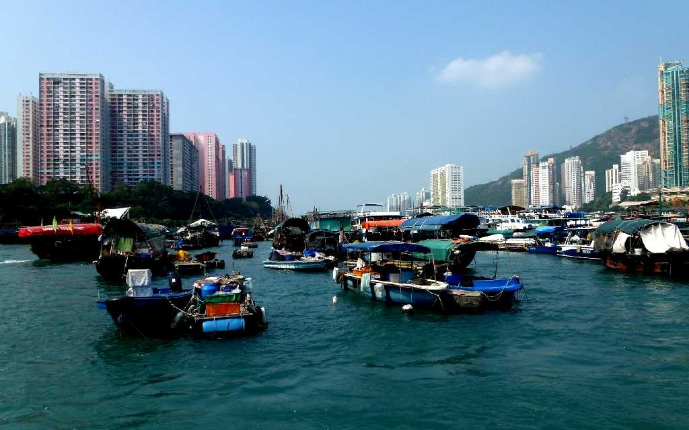
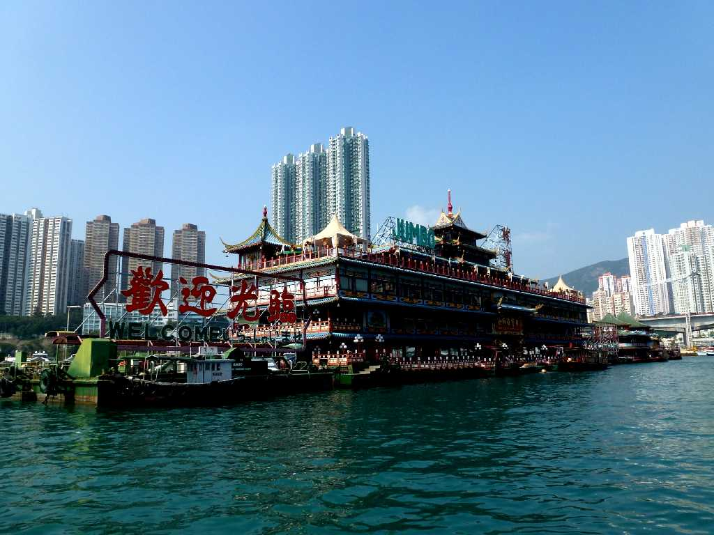
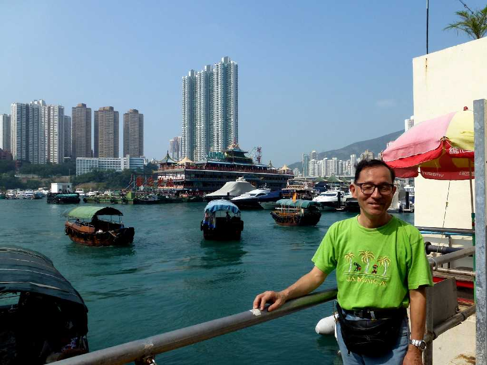
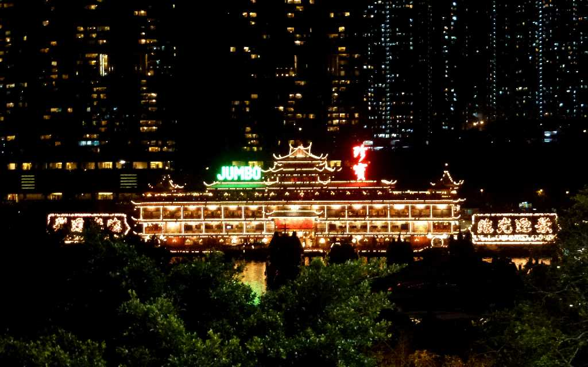

Harbour Aberdeen Hong Kong 香港 香港仔
香港仔の蛋民 アバディーンのタイフーンシェルター内に停泊する船の水上居住者 香港名発祥の地アバディーンは漁村であったが周辺に生育する香木「蜜香樹」の集積地輸出港として栄え香港と呼ばれる様になった

Jumbo Kingdom Aberdeen 珍寶王國
広東料理の船の水上レストランで名高いジャンボキングダム

November 5 2012 Harbour Aberdeen

Night View Jumbo Kingdom Aberdeen
海の宮殿とも云われる美しいジャンボキングダムの夜景